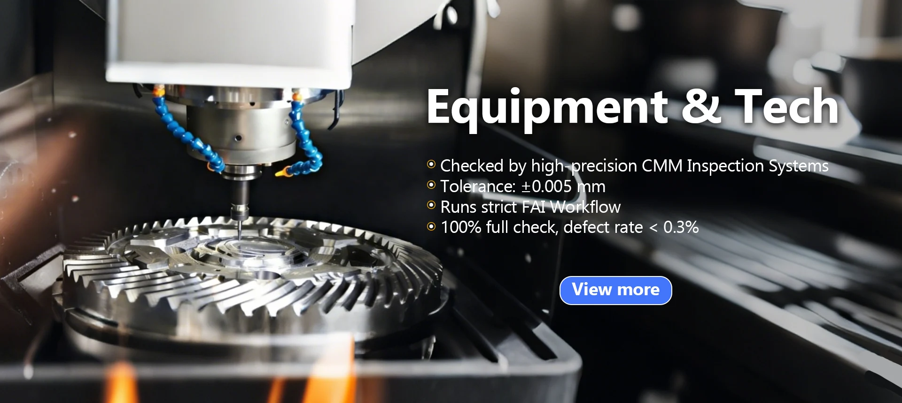

CNC Turning
Precision shafts, sleeves, nuts, studs, knobs, and cylindrical components.
- Brass, aluminum, stainless steel
- Repeatable lathe parts

Precision CNC machining, sheet metal fabrication, surface finishing, and DFM support for global hardware brands, engineering teams, startups, and overseas procurement managers.
Rejin CNC combines CNC turning, milling, 5-axis machining, sheet metal work, finishing, and drawing review so buyers can coordinate fewer suppliers and reduce communication risk.
Precision shafts, sleeves, nuts, studs, knobs, and cylindrical components.
Custom housings, panels, brackets, and complex precision structural parts.
Advanced multi-axis work for aerospace, robotics, and premium hardware.
Laser cutting, bending, welding, stamping, and custom metal fabrication.
Anodizing, painting, polishing, brushing, laser engraving, and finish support.
Design-for-manufacturing feedback to reduce machining risk before production.
The product examples focus on export buyers who need machining quality, stable fit, controlled surface finish, and clear supplier communication.

Custom precision components that require stable fit, finish, and durability.

Precision CNC machined aluminum and stainless steel structural components.

CNC turned aluminum knobs with knurled, anodized, premium cosmetic finishes.

Custom stainless steel and aluminum parts where reliability is critical.
The buying flow is designed for engineering, procurement, and supply-chain teams that need clear feedback before committing to machining.
Share 2D drawings, 3D files, material, quantity, and finishing requirements.
Manufacturing feedback helps identify tolerances, geometry, and finish risks.
Confirm scope, payment terms, prototype needs, inspection criteria, and lead time.
Produce parts with process control, inspection, communication, and export support.

The demo knowledge base includes case scenarios for automotive connector assemblies, audio hardware enclosures, and medical device prototype support.
Use concrete applications, materials, tolerances, and quality expectations instead of broad claims. That keeps the site credible for B2B export buyers.
Brand messaging principle from Rejin CNC knowledge baseSubmit drawings, specifications, materials, quantities, and finishing requirements for quotation and production review.
Service coverage includes CNC turning, CNC milling, 5-axis machining, sheet metal fabrication, surface treatments, and DFM support.
DFM and prototype support help validate structure, manufacturability, and finishing before production.
Rejin CNC is positioned for global hardware teams that need a practical, quote-oriented supplier for custom precision metal components.